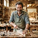
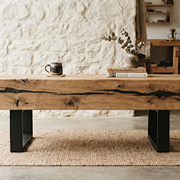
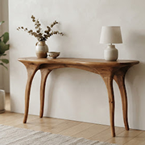
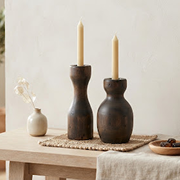

ÉBÉNISTE D'ART & UPCYCLING
Antoine Mercier
Lyon (69) · Atelier La Fuste
« Chaque poutre de déconstruction industrielle conserve la mémoire des siècles passés. Mon rôle n'est pas d'effacer les fentes et les nœuds, mais de les magnifier dans du mobilier architectural épuré. »
Créations signatures récentes


